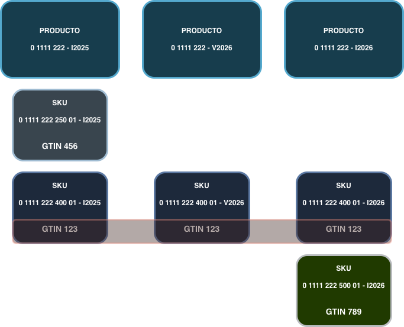
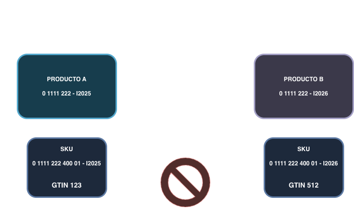

Product Migration status
11 de mayo de 2026
Actualización de la migración de ProductCore
Resumen del estado actual de la migración de ProductCore y apagado del DB2, problemas que han surgido y siguientes pasos
| Watcher |
Zara |
Cadenas |
| Availability |
Apagado |
Rollout en progreso |
| Prices |
Rollout en progreso |
— |
| Exclusions |
En progreso |
— |
| Media |
Apagado |
Rollout en progreso |
| Structure |
En progreso |
— |
| Extended Info |
— |
— |
Este modelo ha sido fallido pero nos es útil para la transición.
❌ Problemas:
- No resuelve los problemas actuales
- Arquitectura compleja
- Depende de Pumbas que lo mantienen alineado
✅ Pros:
- Tiene flujos completos que podemos aprovechar
- El microservicio de Skus tiene un mejor diseño: atemporal y agnóstico a hermanados
📋 Premisas:
- Base sólida y modelo flexible/extensible
- Resolver problemas actuales (temporalidad, traspasos, hermanados...)
- Eficaz: poder activar e implantar flujos
Entidades del nuevo modelo
📦
Products
Estructura migrada al 100% en Zara
🔄
Variants
Estructura migrada al 100% en Zara
🏷️
SKUs
Estructura migrada al 100% en Zara
⚠️ Commercial Options & Components: Diseñadas pero no implementadas. Por ahora usamos el Modelo Intermedio donde tenemos datos y flujos funcionando en Zara y Cadenas.
✅ Beneficio: Teniendo ambos flujos funcionando, no dependemos del watcher de estructura.
1
Configuracion inicial de equipos
Partimos de equipos separados con visiones y decisiones técnicas distintas que hubo que homogeneizar.
2
Dificultad de atemporalizar
Sistemas temporales vs nuevo modelo atemporal: información temporal, atributos... -> SCOPE
3
Hermanados
Permitir grupos de hermanos distintos por campaña y pensar que esta solución tiene que valer para Commercial options y components.
4
Reutilizaciones
Reutilización de referencias para productos distintos


5
Maestros, Ecomload, Pumbas y "procesos ocultos"
Comportamientos legacy de Maestros, enviar los eventos desde Ecomload y detectar Pumbas y procesos ocultos del commerce
6
IOP Producto
Entender su modelo, conseguir los accesos, integración, ACLs...
7
Tiempo invertido en validaciones
Para no dejar cabos sueltos, además de tiempo invertido en análisis y dependencias.
Product Reviews · Visión de Migración de Product Reviews · PRODUCT-XXXX · Abril 2026